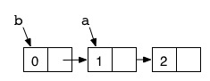

clojure for ruby programmers
- stuart halloway
- stu@thinkrelevance.com
quick start
interactive environment
irb
REPL
collections
enumerable
sequence
select / filter
(1..10).select {|i| i % 2 == 0}
=> [2, 4, 6, 8, 10]
(filter (fn [i] (zero? (rem i 2))) (range 1 11))
-> (2 4 6 8 10)
map / map
(1..10).map {|i| i * 2}
=> [2, 4, 6, 8, 10, 12, 14, 16, 18, 20]
(map #(* % 2) (range 1 11))
-> (2 4 6 8 10 12 14 16 18 20)
inject / reduce
(1..10).inject {|acc,i| acc + i}
=> 55
(reduce + (range 1 11))
-> 55
infix vs. prefix
1 + 2 + 3 + 4 + 5 + 6 + 7 + 8 + 9 + 10
=> 55
(apply + (range 11))
-> 55
higher-order functions
def make_adder(x)
lambda {|i| x + i}
end
adder = make_adder(3)
adder[4]
=> 7
(defn make-adder [x] (fn [i] (+ i x)))
-> #'user/make-adder
(def adder (make-adder 3))
-> #'user/adder
(adder 4)
-> 7
why clojure?
1. elegance
2. sequence library
3. functional programming
4. concurrency
5. macros
6. java interop
data structures
| ruby |
clojure |
| array |
[1, 2, 3] |
vector |
[1 2 3] |
| hash |
{:name => "Ruby", :creator => "Matz"} |
map |
{:name "Clojure" :creator "Hickey"} |
| set |
Set[1,2,3] |
set |
#{1 2 3} |
comments are whitespace
(= [1 2 3] [1, 2, 3])
-> true
,(,=, [1,, 2 3] [1, 2, 3],,,,)
-> true
IFn
IFn example: maps
(def lang {:name "Clojure" :creator "Hickey"})
#'user/lang
(get lang :name)
-> "Clojure"
(lang :name)
-> "Clojure"
(:name lang)
-> "Clojure"
multiple binding
parallel assignment
destructuring
multiple binding example 1
x, y, z = [1, 2, 3]
"x: #{x} y: #{y} z: #{z}"
=> "x: 1 y: 2 z: 3"
(let [[x y z] [1 2 3]]
(format "x: %d y: %d z: %d" x y z))
-> "x: 1 y: 2 z: 3"
multiple binding example 2
(let [[_ _ z :as point] [-14 11 21]]
(format "z: %d in %d dimensions" z (count point)))
-> "z: 21 in 3 dimensions"
metadata
metdata on a var
-> #'format
#'clojure.core/format
-> ^#'format
{:ns #<Namespace clojure.core>,
:name format,
:file "core.clj",
:line 3341,
:arglists ([fmt & args]),
:tag java.lang.String,
:doc "Formats a string using java.lang.String.format, see\
java.util.Formatter for format\n string syntax"}
2. sequence library
what is a sequence?
first / rest / cons
(first [1 2 3])
-> 1
(rest [1 2 3])
-> (2 3)
(cons "hello" [1 2 3])
-> ("hello" 1 2 3)
sequence library examples
(iterate inc 1)
-> (1 2 3 4 5 ...)
(repeat :foo)
-> (:foo :foo :foo :foo :foo ...)
(cycle [1 2])
-> (1 2 1 2 1 ...)
(interleave "ABCDE" (range 5))
-> (\A 0 \B 1 \C 2 \D 3 \E 4)
sequence comprehension
sequence comprehension example
(for [file "ABCDEFGH" rank (range 1 9)] (str file rank))
-> ("A1" "A2" "A3" "A4" "A5" ...)
(for [i (iterate inc 0) :when (= 1 (rem i 2))] i)
-> (1 3 5 7 9 ...)
seq-ables
seq-able examples
(map #(.getName %) (.listFiles (java.io.File. ".")))
-> (".git" "build" "clojure-for-ruby-programmers.maruku"
"footer.html.erb" "gradient.svg.erb" ...)
(line-seq (reader (java.io.File. "rakefile")))
-> ("desc \"build the slideshow\""
""
"task :slideshow do"
" sh \"slideshow -v -o build clojure-for-ruby-programmers.maruku\""
"end" ...)
3. functional programming
a. pure functions
b. referential transparency
c. immutability
what about memory usage?!?
d. shared structure
shared structure example
(def a '(1 2))
-> #'user/a
(def b (cons 0 a))
-> #'user/b

functional style
recur
recur example
; from stactrace.clj, by Stuart Sierra
(defn print-cause-trace
"Like print-stack-trace but prints chained exceptions (causes)."
([tr] (print-cause-trace tr nil))
([tr n]
(print-stack-trace tr n)
(when-let [cause (.getCause tr)]
(print "Caused by: " )
(recur cause n))))
laziness
laziness, circa jan 2009
(defn lazy-cons-fibo []
((fn fib [a b]
(lazy-cons a (fib b (+ a b))))
0 1))
realization
realization example
(drop 1000000000 (iterate inc 0))
; ...wait for it...
-> (1000000000 1000000001 1000000002 1000000003 1000000004 ...)
memoization
memoization example
; Hofstadter's Male and Female Sequences from GEB
; See http://en.wikipedia.org/wiki/Hofstadter_sequence
(declare m f)
(defn- m [n]
(if (= n 0)
0
(- n (f (m (dec n))))))
(defn- f [n]
(if (= n 0)
1
(- n (m (f (dec n))))))
(def m (memoize m))
(def f (memoize f))
game break!
snake game
; Inspired by the snakes that have gone before:
; Abhishek Reddy's snake: http://www.plt1.com/1070/even-smaller-snake/
; Mark Volkmann's snake: http://www.ociweb.com/mark/programming/ClojureSnake.html
(ns examples.snake
(:import (java.awt Color Dimension)
(javax.swing JPanel JFrame Timer JOptionPane)
(java.awt.event ActionListener KeyListener))
(:use clojure.contrib.import-static
[clojure.contrib.seq-utils :only (includes?)]))
(import-static java.awt.event.KeyEvent VK_LEFT VK_RIGHT VK_UP VK_DOWN)
; ----------------------------------------------------------
; functional model
; ----------------------------------------------------------
(def width 75)
(def height 50)
(def point-size 10)
(def turn-millis 75)
(def win-length 5)
(def dirs { VK_LEFT [-1 0]
VK_RIGHT [ 1 0]
VK_UP [ 0 -1]
VK_DOWN [ 0 1]})
(defn add-points [& pts]
(vec (apply map + pts)))
(defn point-to-screen-rect [pt]
(map #(* point-size %)
[(pt 0) (pt 1) 1 1]))
(defn create-apple []
{:location [(rand-int width) (rand-int height)]
:color (Color. 210 50 90)
:type :apple})
(defn create-snake []
{:body (list [1 1])
:dir [1 0]
:type :snake
:color (Color. 15 160 70)})
(defn move [{:keys [body dir] :as snake} & grow]
(assoc snake :body (cons (add-points (first body) dir)
(if grow body (butlast body)))))
(defn turn [snake newdir]
(if newdir (assoc snake :dir newdir) snake))
(defn win? [{body :body}]
(>= (count body) win-length))
(defn head-overlaps-body? [{[head & body] :body}]
(includes? body head))
(def lose? head-overlaps-body?)
(defn eats? [{[snake-head] :body} {apple :location}]
(= snake-head apple))
; ----------------------------------------------------------
; mutable model
; ----------------------------------------------------------
(defn update-positions [snake apple]
(dosync
(if (eats? @snake @apple)
(do (ref-set apple (create-apple))
(alter snake move :grow))
(alter snake move)))
nil)
(defn update-direction [snake newdir]
(dosync (alter snake turn newdir)))
(defn reset-game [snake apple]
(dosync (ref-set apple (create-apple))
(ref-set snake (create-snake)))
nil)
; ----------------------------------------------------------
; gui
; ----------------------------------------------------------
(defn fill-point [g pt color]
(let [[x y width height] (point-to-screen-rect pt)]
(.setColor g color)
(.fillRect g x y width height)))
(defmulti paint (fn [g object & _] (:type object)))
(defmethod paint :apple [g {:keys [location color]}]
(fill-point g location color))
(defmethod paint :snake [g {:keys [body color]}]
(doseq [point body]
(fill-point g point color)))
(defn game-panel [frame snake apple]
(proxy [JPanel ActionListener KeyListener] []
(paintComponent [g]
(proxy-super paintComponent g)
(paint g @snake)
(paint g @apple))
(actionPerformed [e]
(update-positions snake apple)
(when (lose? @snake)
(reset-game snake apple)
(JOptionPane/showMessageDialog frame "You lose!"))
(when (win? @snake)
(reset-game snake apple)
(JOptionPane/showMessageDialog frame "You win!"))
(.repaint this))
(keyPressed [e]
(update-direction snake (dirs (.getKeyCode e))))
(getPreferredSize []
(Dimension. (* (inc width) point-size)
(* (inc height) point-size)))
(keyReleased [e])
(keyTyped [e])))
(defn game []
(let [snake (ref (create-snake))
apple (ref (create-apple))
frame (JFrame. "Snake")
panel (game-panel frame snake apple)
timer (Timer. turn-millis panel)]
(doto panel
(.setFocusable true)
(.addKeyListener panel))
(doto frame
(.add panel)
(.pack)
(.setVisible true))
(.start timer)
[snake, apple, timer]))
4. concurrency
software transactional memory
STM example
; pure function
(defn turn [snake newdir]
(if newdir (assoc snake :dir newdir) snake))
; compose mutability atop pure functions
(defn update-direction [snake newdir]
(dosync (alter snake turn newdir)))
STM Benefits
- Compose atop pure functional code
- Easy to use (compare locks!)
lots more to say
(come to the concurrency talk)
mapping OO concepts to FP
what is OO?
- Encapsulation
- Polymorphism
- Inheritance
- Reuse
encapsulation example
(defn game []
(let [snake (ref (create-snake))
apple (ref (create-apple))
frame (JFrame. "Snake")
panel (game-panel frame snake apple)
timer (Timer. turn-millis panel)]
(doto panel
(.setFocusable true)
(.addKeyListener panel))
(doto frame
(.add panel)
(.pack)
(.setVisible true))
(.start timer)
[snake, apple, timer]))
polymorphism is the flatland of multimethods
multimethod example 1
; vastly simplified from Clojure's own print mechanism
(defmulti my-print class)
(defmethod my-print String [s]
(.write *out* s))
(defmethod my-print nil [s]
(.write *out* "nil"))
(defmethod my-print Number [n]
(.write *out* (.toString n)))
(defmethod my-print :default [s]
(.write *out* "#<")
(.write *out* (.toString s))
(.write *out* ">"))
multimethod example 2
- dispatch on multiple facets of a single object
(derive ::Savings ::Account)
(derive ::Checking ::Account)
(defmulti service-charge (fn [acct] [(account-level acct) (:tag acct)]))
(defmethod service-charge [::Basic ::Checking] [_] 25)
(defmethod service-charge [::Basic ::Savings] [_] 10)
(defmethod service-charge [::Premium ::Account] [_] 0)
multimethod example 3
- dispatch on multiple objects
(defmulti coerce
(fn [dest-class src-inst] [dest-class (class src-inst)]))
(defmethod coerce [java.io.File String] [_ str]
(java.io.File. str))
(defmethod coerce [Boolean/TYPE String] [_ str]
(contains? #{"on" "yes" "true"} (.toLowerCase str)))
(defmethod coerce :default [dest-cls obj] (cast dest-cls obj))
reuse example?
- Everything!
- Try to find a reuse counterexample!
5. macros
(come to the macro talk)
6. java interop
interop forms
| java |
clojure |
sugared |
new Widget("red") |
(new Widget "red") |
(Widget. "red") |
Math.PI |
(. Math PI) |
Math/PI |
System.currentTimeMillis() |
(. System currentTimeMillis) |
(System/currentTimeMillis) |
rnd.nextInt() |
(. rnd nextInt) |
(.nextInt rnd) |
person.getAddress().getZipCode() |
(. (. person getAddress) getZipCode) |
(.. person getAddress getZipCode) |
ruby inspired libraries
compojure
compojure example: servlet
(defservlet snippet-servlet
(GET "/"
(new-snippet))
(GET "/:id"
(show-snippet (route :id)))
(POST "/"
(create-snippet (:body params))))
compojure example: handlers
(defn new-snippet []
(layout "Create a Snippet"
(form-to [POST "/"]
(text-area {:rows 20 :cols 73} "body")
[:br]
(submit-button "Save"))))
(defn create-snippet [body]
(if-let [id (insert-snippet body)]
(redirect-to (str "/" id))
(redirect-to "/")))
clj-record
clj-record example
(cljrec/init-model
(has-many products)
(validates name "empty!" #(not (empty? %)))
(validates name "starts with whitespace!"
#(not (re-find #"^\s" %)))
(validates name "ends with whitespace!"
#(not (re-find #"\s$" %)))
(validates grade "negative!"
#(or (nil? %) (>= % 0))))
clojure’s strengths
- elegance
- sequence library
- functional programming
- concurrency model
- macros
- java interop